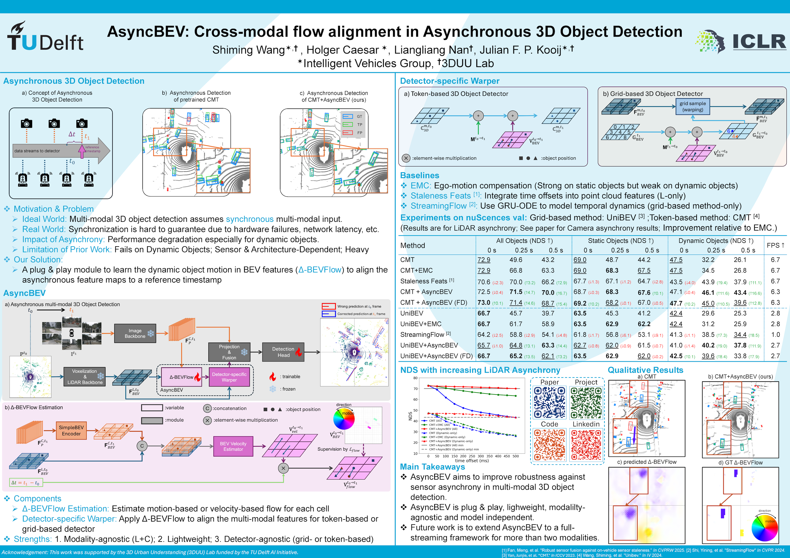

ICLR 2026
AsyncBEVCross-Modal Flow Alignment in
Asynchronous 3D Object Detection
Delft University of Technology

Align asynchronous camera and LiDAR features.
Detect moving objects more reliably.
The challenge
Abstract
In autonomous driving, multi-modal perception tasks like 3D object detection typically rely on well-synchronized sensors, both at training and inference. However, despite the use of hardware- or software-based synchronization algorithms, perfect synchrony is rarely guaranteed: Sensors may operate at different frequencies, and real-world factors such as network latency, hardware failures, or processing bottlenecks often introduce time offsets between sensors. Such asynchrony degrades perception performance, especially for dynamic objects.
To address this challenge, we propose AsyncBEV, a trainable, lightweight, and generic module to improve the robustness of 3D Bird’s Eye View (BEV) object detection models against sensor asynchrony. Inspired by scene flow estimation, AsyncBEV predicts a dense 2D flow field directly from asynchronous multi-modal BEV features taking into account the known time offset between these sensor measurements. The predicted feature flow is then used to warp and spatially align the feature maps, which we show can easily be integrated into different current BEV detector architectures (e.g., BEV grid-based and token-based).
Extensive experiments demonstrate AsyncBEV improves robustness against both small and large asynchrony between LiDAR or camera sensors in both the token-based CMT (Yan et al., 2023) and grid-based UniBEV (Wang et al., 2024), especially for dynamic objects. We significantly outperform the ego motion compensated CMT and UniBEV baselines, notably by 16.6% and 11.9% NDS on dynamic objects in the worst-case scenario of a 0.5s time offset. Code is available at https://github.com/tudelft-iv/AsyncBEV.
Abstract from the ICLR 2026 paper. The reported gains are NDS percentage points over ego-motion-compensated baselines on dynamic objects in nuScenes validation at a 0.5 s LiDAR delay. The released implementation in this repository is based on CMT.
From time offset to spatial alignment
How AsyncBEV works
Use the known sensor time difference to align features before detection.
Observe asynchronously
Camera and LiDAR encoders extract features from measurements captured at different timestamps.
Camera + LiDAR + ΔtPredict cross-modal flow
A lightweight module predicts dense BEV velocity. The known time offset converts velocity into displacement.
Displacement = velocity × ΔtAlign, then detect
Combine dynamic correction with ego motion compensation, then align token positions or grid features for detection.
CMT tokens / UniBEV grids
The paper evaluates both CMT and UniBEV. The public code and the scene comparisons below use CMT.
Qualitative results
Explore the scene comparisons
Compare CMT and CMT with AsyncBEV on the same scene with asynchronous LiDAR.
CMT
BaselineWaiting for scene list
Open CMT videoCMT + AsyncBEV
Cross-modal flow alignmentWaiting for scene list
Open AsyncBEV videoPlay, pause, seek, or change speed using either video or the shared controls. Playback is linked by elapsed time; changing scenes pauses both videos and returns to the beginning. Only the selected pair is loaded. These are web-optimized display copies; view video provenance.
Read, reproduce, and build
Paper & resources
The poster gives a visual overview of the method and paper-reported experiments. Find the CMT implementation and configurations in the repository.
- Read the conference paper Method, experiments, and limitations
- Explore the code CMT implementation and configurations
- Download the data supplement Precomputed flow labels and asynchronous sensor indices for nuScenes

Citation
@inproceedings{wang2026asyncbev,
title = {AsyncBEV: Cross-Modal Flow Alignment in Asynchronous 3D Object Detection},
author = {Wang, Shiming and Caesar, Holger and Nan, Liangliang and Kooij, Julian F. P.},
booktitle = {The Fourteenth International Conference on Learning Representations},
year = {2026},
url = {https://arxiv.org/abs/2601.12994}
}